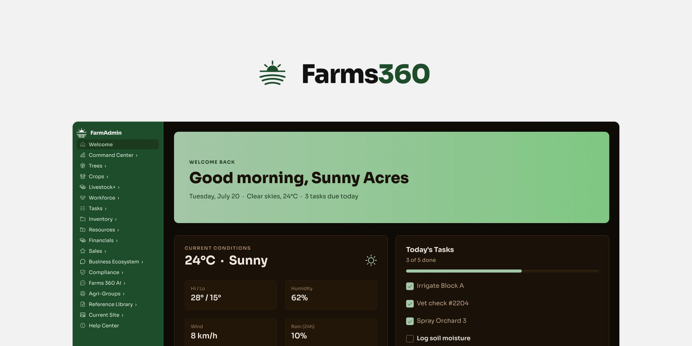
Farms 360
Interface & Design System For A Farm Management Platform
Farms 360 makes software for farm managers: Farm Admin, a web console for running the farm day to day, and Farms 360 AI, an assistant that answers questions from the farm’s own records.
From April to September 2026 I worked on it as a UI/UX designer on contract with Cambrian College Research & Development. I designed the interface and the design system.
All screens on this page use demo data.
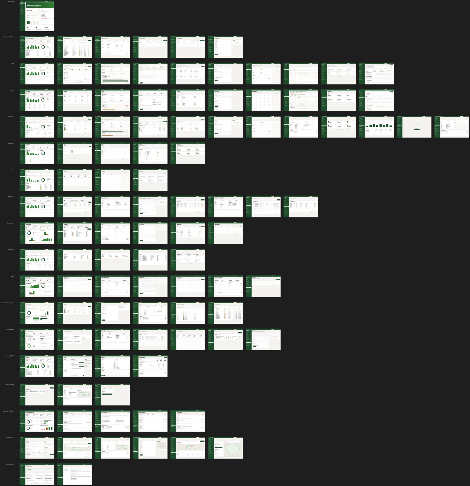
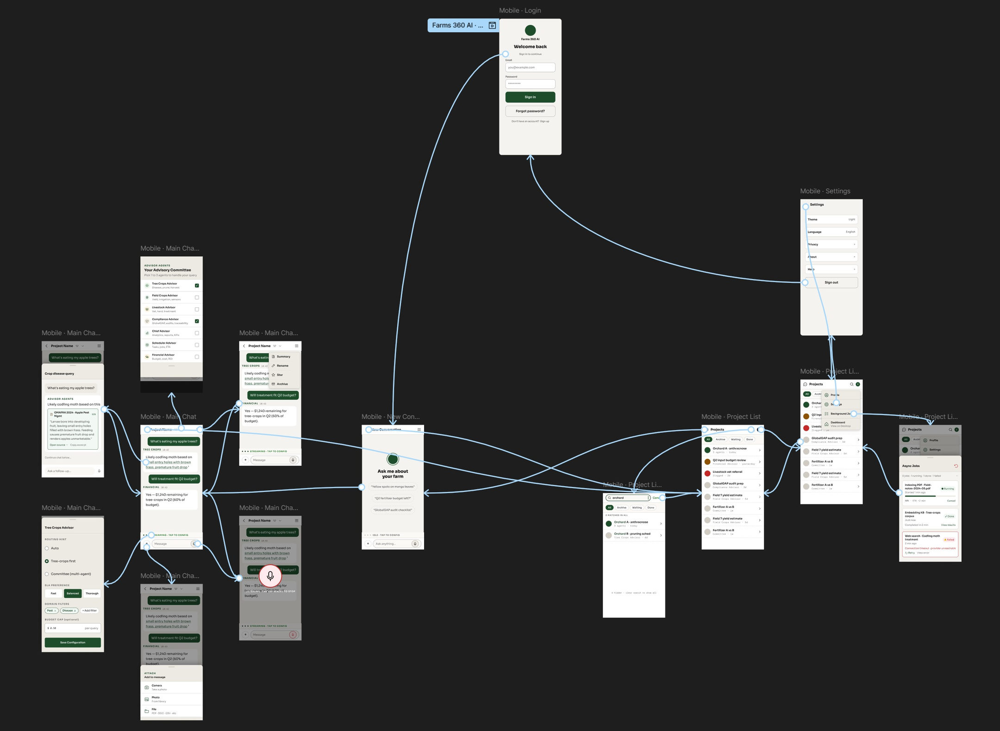
Overview
All 107 desktop screens of Farm Admin on one board, one row per module. Most rows start with the module’s analytics page, then its record lists with their detail pages and forms, then logs, calendars and reports. The tablet and phone sets follow the same rows.
Below it, the lo-fi prototype of the Farms 360 AI phone app, with the flow between its screens: sign-in, a new conversation, the main chat and its pop-ups, the project list and settings.
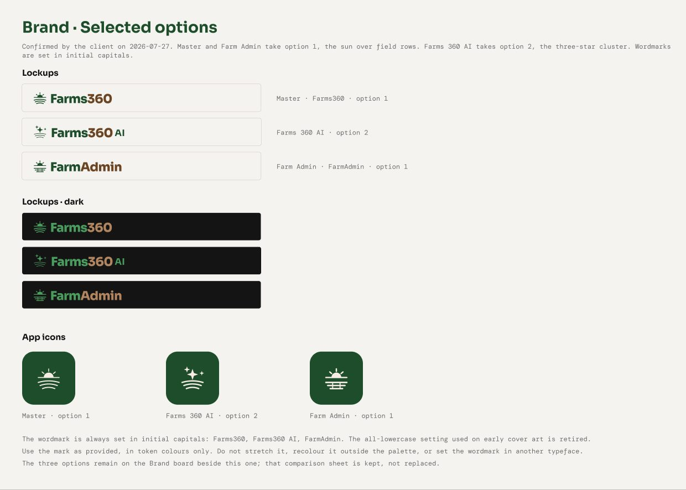
Brand marks
Three logo concepts, each with a version for the master brand, the AI product and Farm Admin. The client combined two of them: a sun over field rows for Farms 360 and Farm Admin, and a three-star mark for Farms 360 AI.
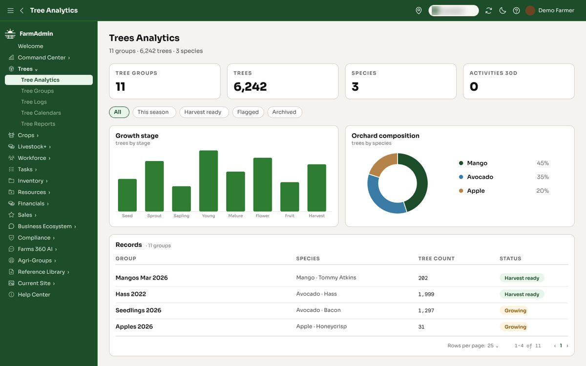
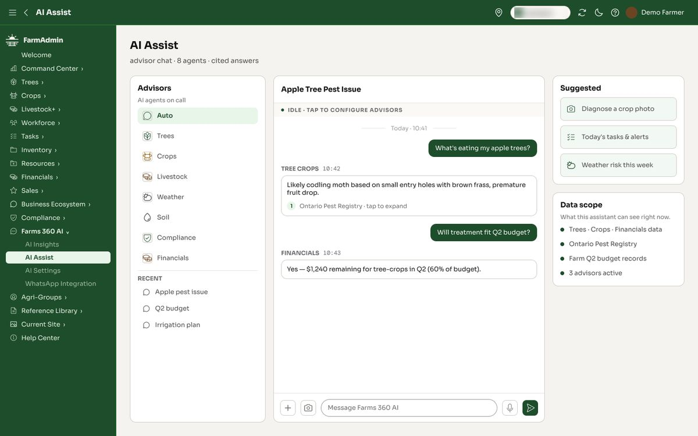
Farm Admin console
The console covers 18 modules, from trees, crops and livestock to tasks, inventory, sales and compliance. Each module reuses the same page types: analytics, record tables, detail pages and forms.
AI Assist is an advisor chat inside the console. Each answer names the advisor that gave it and the source it used.
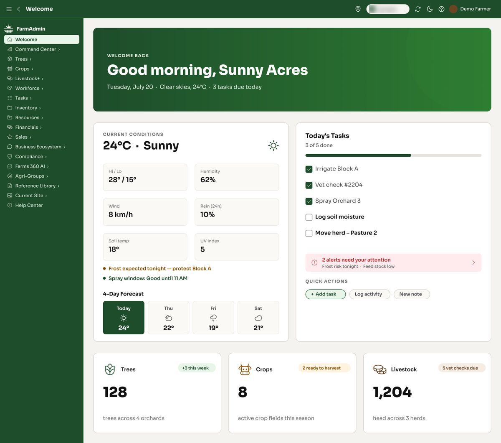
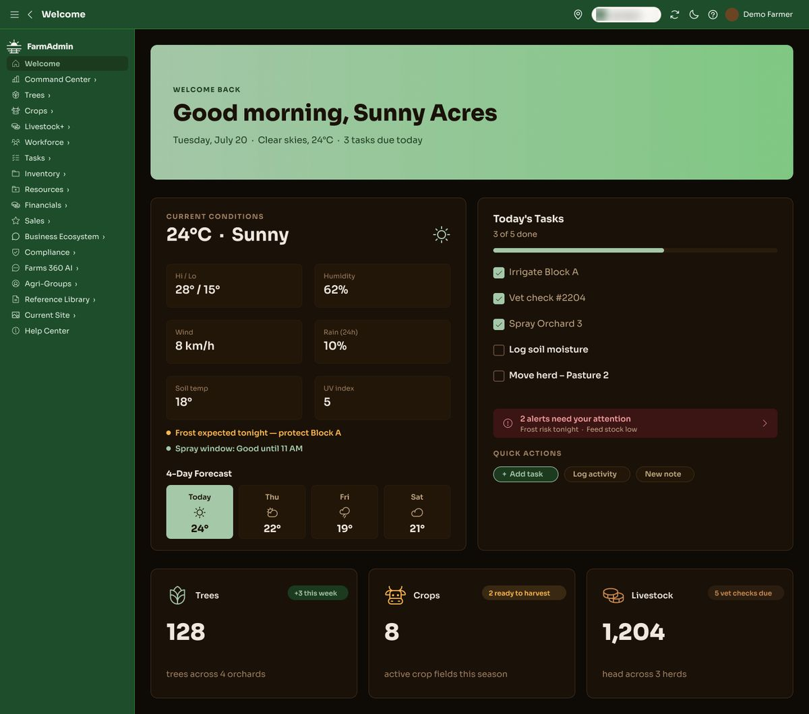
Light and dark
Both themes share one set of layouts and change only the colour tokens. The light theme leads with green, the dark theme with a deep brown.
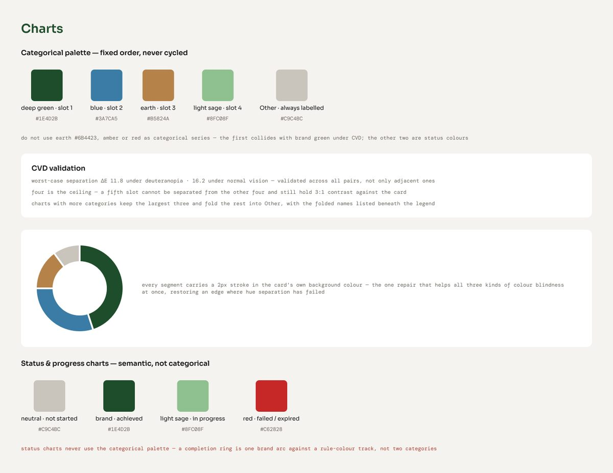
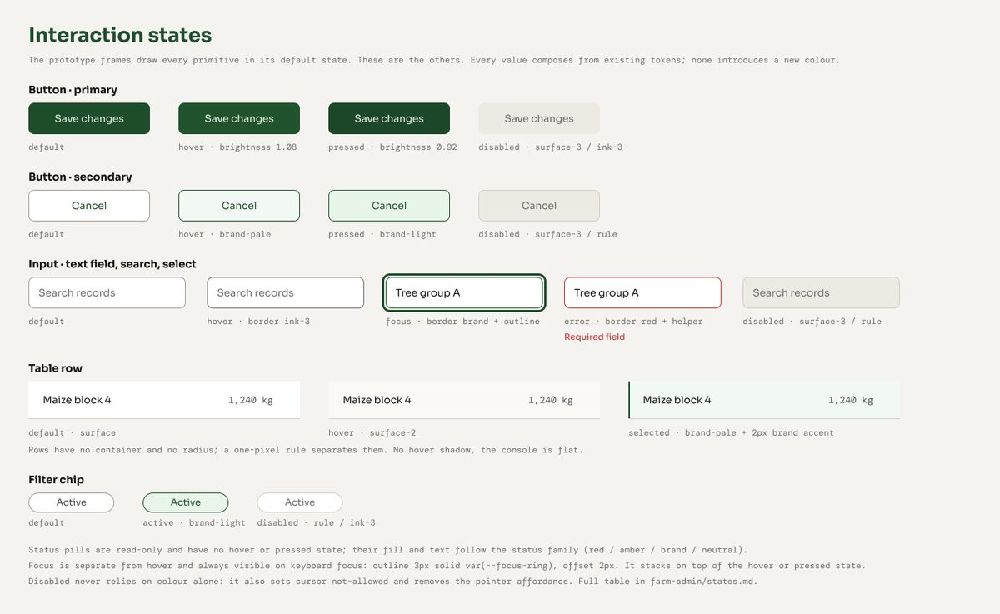
Design system
The design system sets the colour, type and spacing tokens, the interaction states and the rules for charts. The chart palette was checked for colour blindness and stops at four series.
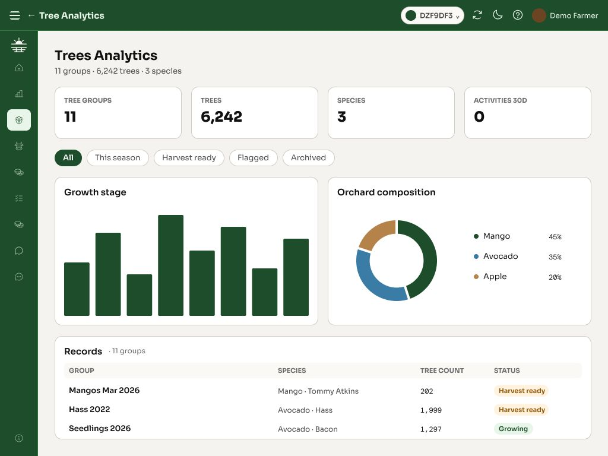
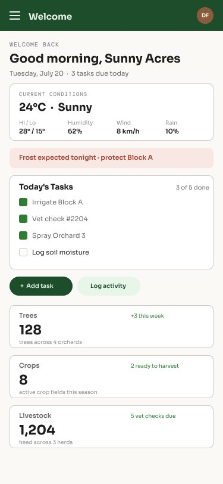
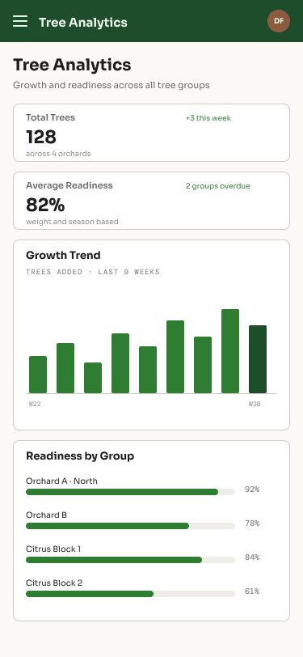
Tablet and phone
Tablet and phone layouts follow the page type: tables scroll inside their card, forms and detail pages stack, and charts reflow to one column.